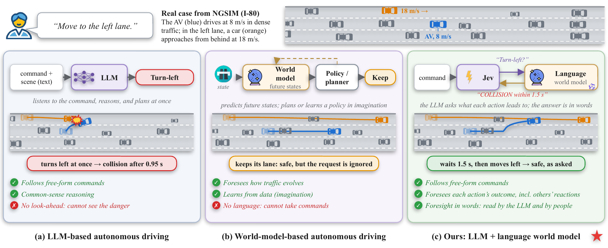
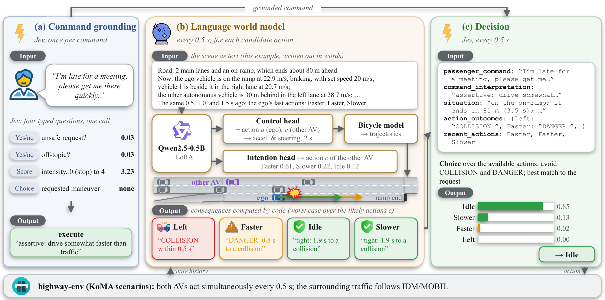
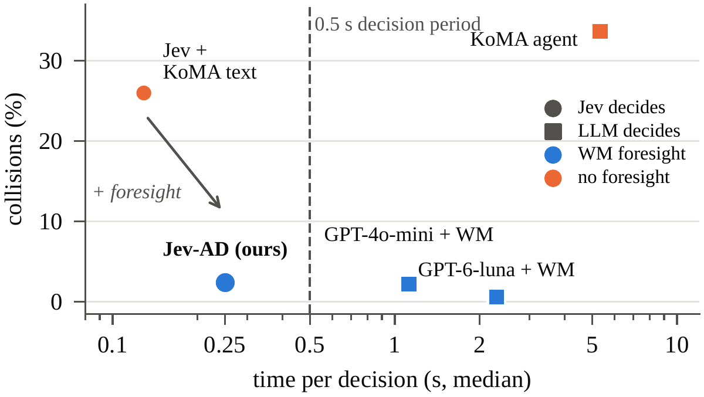
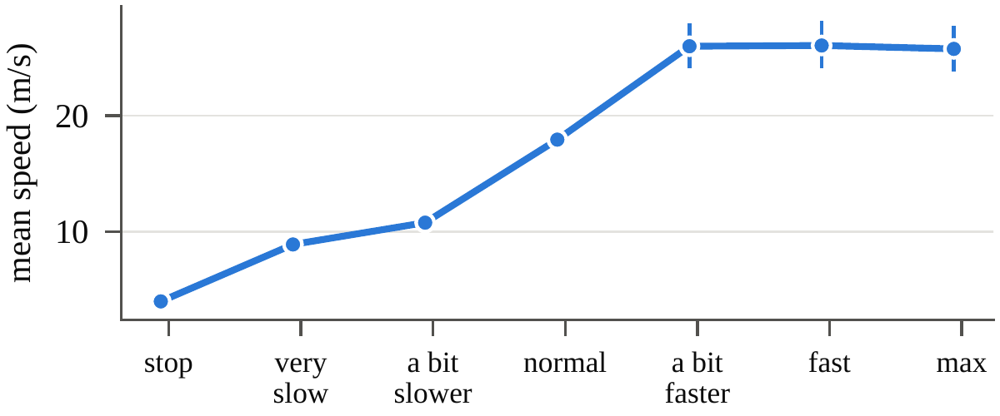
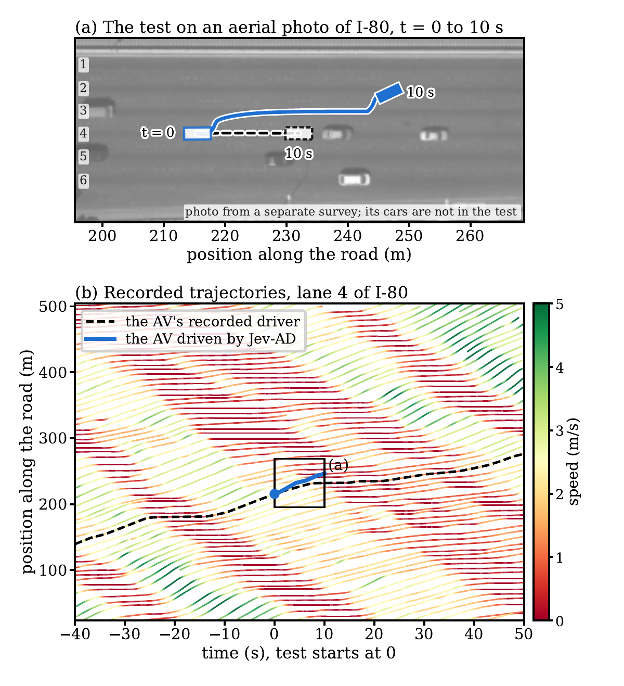
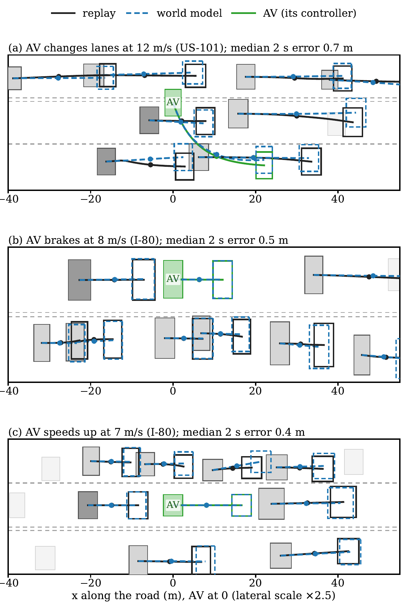

Abstract
Large language models understand passengers' driving commands, but as driving agents they reason in generated text for seconds and must infer the consequences of each action implicitly from the scene. We present Jev-AD, which pairs Jev, a typed decision model that answers predefined questions with probabilities instead of generating text, with a language world model that predicts for every candidate action how nearby vehicles move over the next two seconds. Code turns these predictions into foreseen consequences, which Jev compares instead of inferring them from coordinates. In simulated highway merging (500 car-episodes), this foresight lowers the same decision model's collision rate from 26.0% to 2.4% at 0.25 seconds per decision, and Jev-AD achieves the passenger's intent in 93% of free-form command trials. In 500 replayed real-world NGSIM episodes, foresight lowers the collision rate from 48.2% to 2.8%, and the world model, learned from this traffic, foresees 93% of dangerous actions.
Why foresight?
An LLM driving agent reads the scene as positions and speeds, and has to work out for itself what each action will lead to. In dense traffic this can fail.

How Jev-AD works
Jev is a typed decision model: each question fixes the type of its answer (a choice among named options, a score on a scale, or yes/no), and the model returns a probability for every possible answer instead of generating text, in about 0.13 s per call.
- Once per commandCommand grounding. Jev answers four typed questions about the passenger's words: is the request unsafe, is it off-topic, how aggressive is it, and which maneuver does it ask for. Unsafe requests are refused.
- Every 0.5 sForesight. A small language world model reads the last 2 s as text and predicts, for each candidate action, how up to nine nearby vehicles move over the next 2 s, including how they react to the AV. Code turns the trajectories into consequences stated in words: whether and when the AV would collide, the minimum time to collision, and its final lane and speed.
- Every 0.5 sDecision. One Jev call reads the command and the foreseen consequences and chooses the safe action that best matches the passenger's request.

Results
Foresight is what removes most collisions. With the same decision model and the same command grounding, KoMA's scene text leads to collisions in 26.0% of the car-episodes and foresight from the language world model to 2.4%. Even foresight from constant-velocity prediction lowers the rate to 2.8%, so the gain comes from the foresight itself. The world model makes the foresight more accurate: it raises fewer false alarms, and because it foresees that the car behind brakes, the car stops promptly when the passenger asks.


Replayed real-world traffic (NGSIM)
We replay recorded freeway traffic from NGSIM (US-101 and I-80). One recorded vehicle becomes the AV; every other vehicle follows its recording until the AV, or a vehicle that already reacts, is directly ahead of it and too close, and from then on IDM drives it. On average, 97% of the vehicles around the AV follow their recordings at a decision. The world model is trained on this traffic and foresees 93% of the dangerous actions, with false alarms for 10% of the safe ones.


All results come from simulation and from replayed recorded traffic; no test was run on a vehicle. The paper lists the limitations.
Citation
@article{qu2026jevforesight,
title = {Jev with Foresight: Safe Language-Guided Autonomous
Driving via a Language World Model},
author = {Qu, Yansong and Chen, Jiancong and Labi, Samuel},
journal = {arXiv preprint},
year = {2026}
}